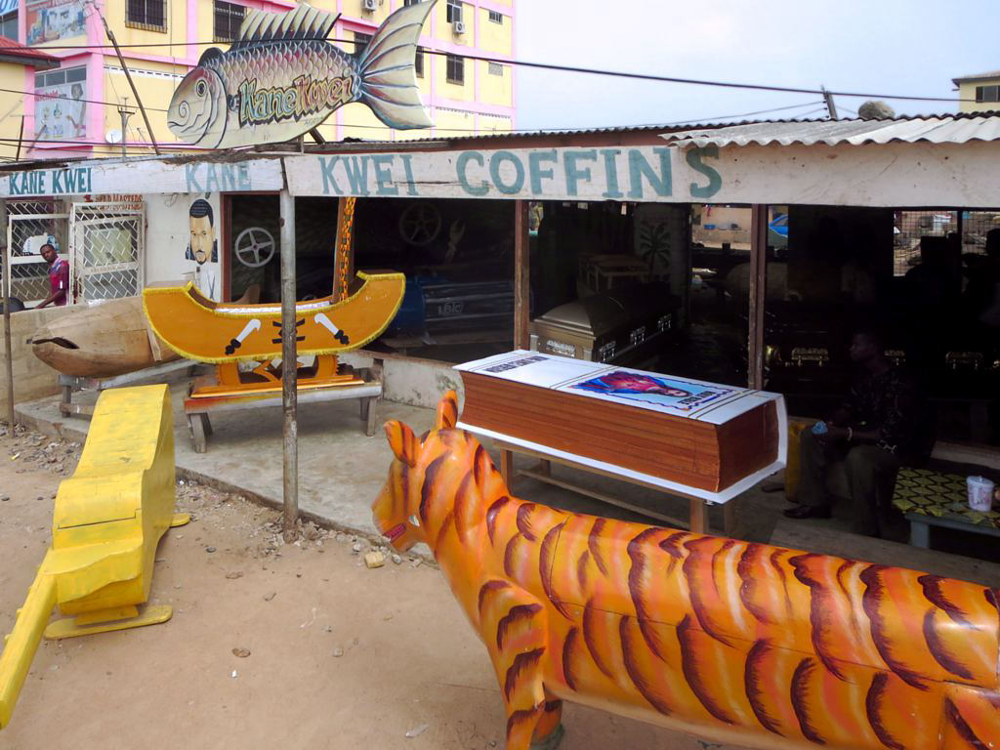

Historia de portada
El mundo tiene sus razones. Nosotros las contamos.
27 costumbres, creencias y rarezas culturales del mundo, explicadas con calma: por qué existen y qué dicen de quienes las viven.
Los 27 porqués
Costumbres que alguien, en algún lugar, encuentra perfectamente normales
Organizadas por continente. Cada una es una puerta a por qué el mundo funciona distinto según dónde te pares.
Europa
-

Rituales · Finlandia
El país donde hacer fila para sudar en silencio es sagrado
En Finlandia hay más saunas que coches. Y aun así, la gente hace cola para entrar. Entender por qué revela una de las relaciones más íntimas entre un pueblo y un espacio.
-

Gastronomía · Francia
Por qué pedir la cuenta rápido en un restaurante francés casi ofende
En Francia, apurar al camarero para pagar y salir puede leerse como decir que la comida no merecía tiempo. La mesa, ahí, es mucho más que un lugar para comer.
-

Vida cotidiana · Países Bajos
Las casas sin cortinas que presumen su vida privada al mundo
Caminar de noche por una calle holandesa es como recorrer una galería de salas de estar iluminadas. Nadie las oculta, y eso dice más de lo que parece sobre la sociedad neerlandesa.
-

Vida social · Alemania
El país donde deberle veinte céntimos a un amigo es cosa seria
En Alemania, dividir la cuenta hasta el último céntimo entre amigos no es tacañería: es una forma de respeto mutuo profundamente arraigada en la cultura.
-

Gastronomía · Italia
El crimen de pedir un capuchino después de mediodía en Italia
Pedir un capuchino después de comer en Italia puede ganarte una mirada de desaprobación silenciosa. Detrás de esa regla no escrita hay siglos de tradición cafetera y una lógica digestiva muy concreta.
-

Crianza · Noruega
Los bebés que duermen a la intemperie mientras sus padres toman café
En Noruega es normal ver un carrito con un bebé dormido, solo, en la calle, con temperaturas bajo cero, mientras sus padres están dentro de un café. No es descuido: es ciencia, tradición y mucha confianza social.
-

Vida social · Rusia
Por qué sonreír a un desconocido en la calle puede parecer sospechoso
En Rusia, sonreír sin motivo a alguien que no conoces no se interpreta como amabilidad, sino como algo extraño, incluso deshonesto. Hay un refrán ruso que lo resume en pocas palabras.
-

Gastronomía · Portugal
El pez que tiene mil recetas y ninguna se repite en el mismo año
Portugal asegura tener una receta distinta de bacalao para cada día del año. Lo curioso es que ese pescado ni siquiera se pesca en sus costas.
-

Infraestructura · Suiza
El país donde el tren llega tarde una vez cada... casi nunca
Un retraso de tres minutos en Suiza cuenta oficialmente como un tren "no puntual". La obsesión suiza por la precisión ferroviaria es tan real como los relojes que exporta al mundo entero.
-

Identidad · Islandia
El país donde casi nadie lleva el apellido de su padre
En Islandia, tu "apellido" no viene de una familia que se repite generación tras generación: se construye de nuevo con cada persona, a partir del nombre de pila de su propio padre o madre.
-

Celebraciones · Grecia
Romper platos: la fiesta griega que empieza con un pequeño desastre
En las tabernas griegas más animadas, cuando la música sube de volumen, algunos platos terminan estrellados contra el suelo entre aplausos. No es un accidente ni un descontrol: es alegría, deliberadamente ruidosa.
-

Vida laboral · Suecia
La pausa del café que en Suecia es casi obligatoria en el trabajo
En Suecia, detener el trabajo a media mañana para tomar café con los compañeros no es una distracción: es una institución social con nombre propio, defendida incluso por las empresas más productivas del país.
Asia
-
Costumbres · Japón
El estornudo que puede vaciar un vagón de metro en Tokio
En Japón, sonarse la nariz en público incomoda más que toser fuerte o eructar en la mesa. La razón no tiene nada que ver con los gérmenes.
-

Creencias · India
La vaca que camina donde quiere y nadie se atreve a detenerla
En las calles de la India, una vaca puede parar el tráfico de una autopista sin que nadie toque la bocina más de la cuenta. Detrás de esa escena hay milenios de teología, economía y símbolo.
-

Tradición y ley · Corea del Sur
El día que naces ya tienes un año, y otras rarezas del calendario coreano
Hasta hace poco, en Corea del Sur podías tener dos edades distintas según el documento que consultaras. La razón combina astrología antigua, orgullo cultural y una reforma legal muy reciente.
-

Creencias · Tailandia
La cabeza que nadie debe tocar, ni siquiera para hacer cariño
En Tailandia, acariciar la cabeza de un niño con buena intención puede resultar profundamente ofensivo. La razón conecta el cuerpo humano con lo más sagrado del budismo.
-

Creencias · China
El número que los edificios evitan como si diera mala suerte real
En China, muchos edificios no tienen piso cuatro, ni catorce, ni cuarenta y cuatro. La razón es puramente lingüística, pero su efecto en la vida cotidiana es tan real como cualquier superstición.
-

Filosofía de estado · Bután
El país que mide su riqueza en felicidad, no en dinero
Mientras el resto del planeta compite por hacer crecer su PIB, Bután decidió, hace décadas, medir el progreso de su país con un índice de felicidad nacional. La idea nació casi por accidente y terminó siendo política de estado.
-

Familia y sociedad · Filipinas
Familias de veinte personas que caben, todas, en un mismo corazón
En Filipinas, "familia" casi nunca significa solo padres e hijos. Primos, tíos, abuelos y hasta vecinos cercanos forman parte de una red que sostiene, literalmente, la vida cotidiana de millones de personas.
-

Ley y orden · Singapur
La ciudad que multa hasta por masticar chicle en la calle
Singapur prohibió por ley la venta de chicle en 1992. No fue un capricho: fue la respuesta directa a un problema muy concreto que estaba costando una fortuna al sistema de transporte público.
América
-

Tradición · México
La fiesta que le canta a la muerte en vez de temerle
El Día de Muertos no es una versión mexicana de Halloween. Es una tradición milenaria que convierte el luto en color, música y comida compartida con quienes ya no están.
-

Tradición · Argentina
La bombilla que pasa de boca en boca sin que nadie se incomode
Compartir una misma bombilla de mate entre desconocidos rompería cualquier norma de higiene occidental. En Argentina, Uruguay y Paraguay, es justo lo contrario: el gesto más claro de confianza y comunidad.
-

Gastronomía · Perú
El animal que en un país es plato fuerte y en otro es mascota de peluche
Mientras en muchos hogares occidentales el cuy vive en una jaula como mascota, en los Andes peruanos es un ingrediente central de la gastronomía desde hace más de cinco mil años.
-
Trabajo y dinero · Estados Unidos
El país donde los camareros cobran, por ley, 2,13 dólares la hora
En Estados Unidos, el salario base de un camarero puede ser legalmente casi nulo. La ley da por hecho que tu propina cubrirá el resto.
África
-

Tiempo y cultura · Etiopía
El país que vive casi ocho años en el pasado, y no es un error
Si viajas a Etiopía y te dicen que estamos en un año distinto al que marca tu calendario, no te has equivocado de país: es matemática, historia y religión antigua funcionando en paralelo al resto del mundo.
-

Comercio y tradición · Marruecos
Comprar sin regatear en Marruecos es casi de mala educación
En los zocos marroquíes, aceptar el primer precio que ofrece un vendedor no se considera cortesía: se considera, casi, una falta de respeto hacia una conversación que ambos deberían disfrutar.
-

Artesanía · Ghana
Los ataúdes que no se parecen en nada a un ataúd
En Ghana, un pescador puede ser enterrado dentro de un pez de madera, y un taxista dentro de un coche en miniatura. Detrás del espectáculo hay una creencia muy seria sobre cómo debe recordarse una vida.
¿Prefieres explorar por país?
El archivo completo reúne las 27 costumbres agrupadas por continente, listas para hojear como una revista.
Ir al archivo →